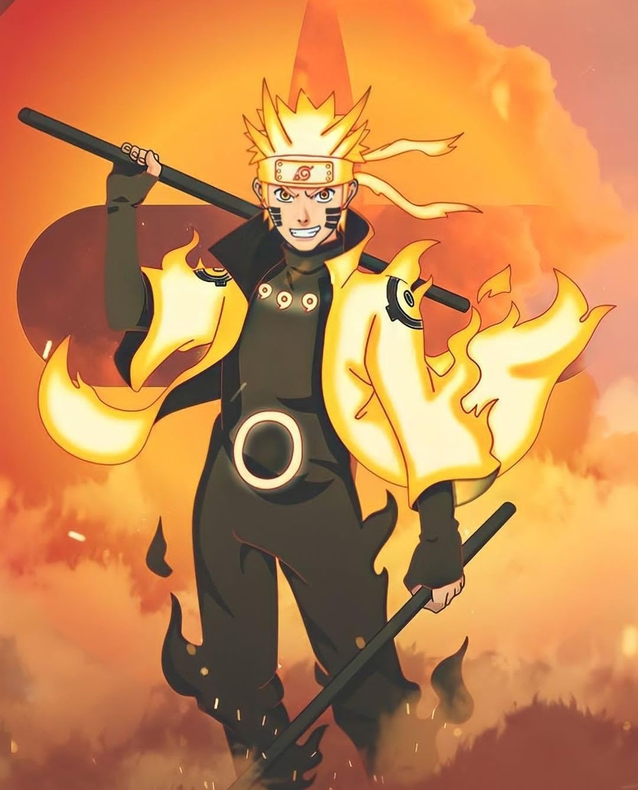

Posting Teratas

Baca selengkapnya>>>>>
Tentang Naruto
Naruto Uzumaki
(Uzumaki Naruto) yang bergelar Hokage Ketujuh (Nanadaime Hokage) adalah tokoh utama dari serial anime dan manga Naruto. Ia merupakan tokoh utama dalam serial ini.....Baca selengkapnya>>>>>

Tentang Sasuke
Uciha Sasuke
(Uchiha Sasuke) adalah seorang karakter fiktif dari komik dan anime Naruto. Nama depan Sasuke, konon berasal dari nama seorang ninja legendaris, Sarutobi Sasuke. Sedangkan nama belakangnya, "Uchiha" dibaca sebagai "uchiwa", atau "kipas kertas" (kipas yang terbuat dari kertas)....Baca selengkapnya>>>>>

Tentang Sakura
Sakura Haruno
Sakura adalah tokoh fiksi dari serial manga dan anime Naruto. Ia merupakan seorang ninja wanita (kunoichi) cantik yang tergabung dalam Tim 7 bersama Naruto Uzumaki dan Sasuke Uchiha di bawah bimbingan Kakashi Hatake..Baca selengkapnya>>>>>